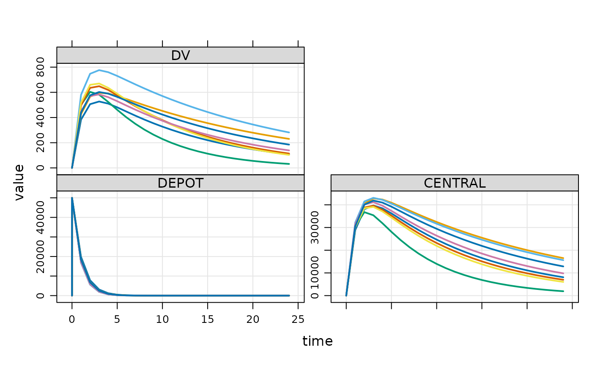

Use parameter estimates
Usage
use_estimates(
x,
use_eta = TRUE,
use_covariates = TRUE,
.etasrc = "idata.all",
.zero_re = "both",
verbose = TRUE
)Arguments
- x
A
mapbayestsobject.- use_eta
a logical. Populate the
idatasetwith the estimates (ETA).- use_covariates
a logical. Populate the
idatasetwith the covariate values available in the data.- .etasrc
a character. Value used to populate
mrgsim(etasrc).- .zero_re
a character. Set all elements of the OMEGA or SIGMA matrix to zero. Default is "both", alternatively "sigma", "omega" and "none".
- verbose
a logical. Display information to the console.
Details
This function takes the results of an estimation (i.e. a mapbayests object) and return a modified mrgmod in order to perform a posteriori simulations. Modifications are:
An individual data set (
idata_set), populated with the estimated ETA parameters and the covariate values provided in the original data set.The argument
etasrcset to "idata.all" (or different, depending on the value set to.etasrc).OMEGA and SIGMA matrices set to zero (or different, depending on the value of
.zero_re). It does not handle time-varying covariates: only the first value will be used as the individual value.
Examples
library(magrittr)
library(mrgsolve)
est <- mapbayest(exmodel(ID = 1:8))
#>
#> [======================================>-----------------------] ID 5/8 ( 62%)
#>
#> [=============================================>----------------] ID 6/8 ( 75%)
#>
#> [=====================================================>--------] ID 7/8 ( 88%)
#>
#> [==============================================================] ID 8/8 (100%)
#>
#>
est %>%
use_estimates() %>%
ev(amt = 50000) %>%
mrgsim() %>%
plot()
#> ℹ Updating `idata_set()` with individual ETA estimates.
#> ℹ Setting all elements of the OMEGA and SIGMA matrices to zero.
#> ℹ Setting `etasrc = "idata.all"`.
#> ℹ You can use `data_set()` or `ev()` to simulate "a posteriori".
